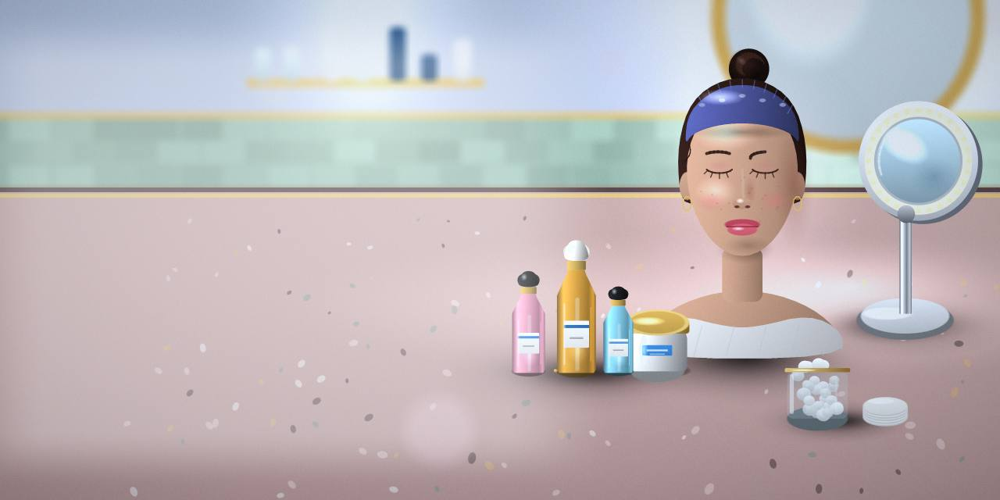
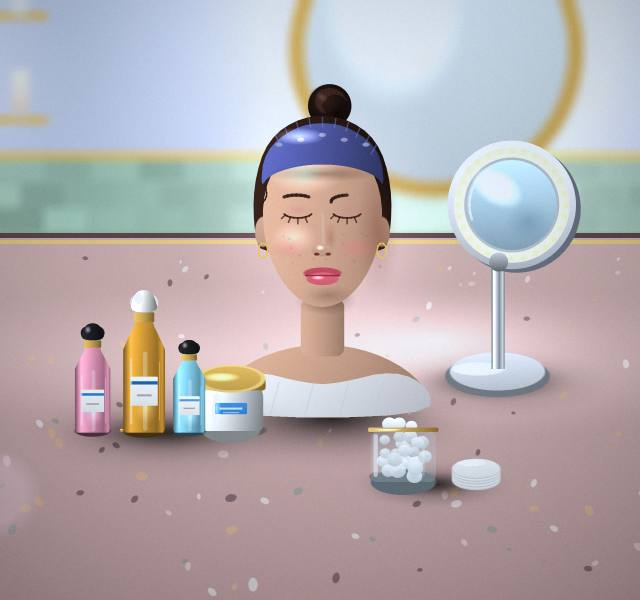
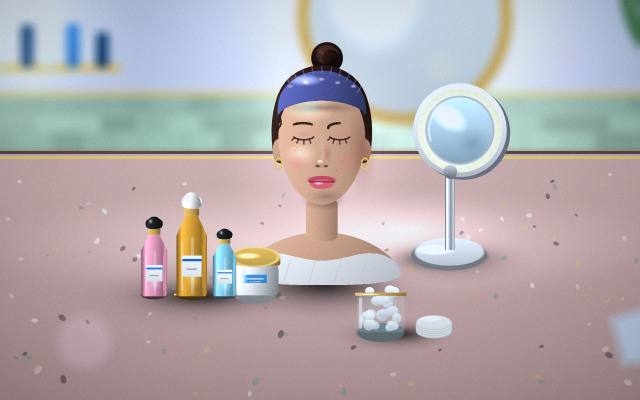

Treatments
Curious about Treatments? Ask us anything.

Medical Clinic · Chandigarh
You will always know what comes next.

Small questions are always welcome too.
You will find us in Chandigarh. Ask what's included before you make up your mind.
Curious about Treatments? Ask us anything.
Tell us what you need from Consultations and we'll suggest where to start.
If Screenings is on your mind, book a visit and we'll talk it through.
Bring your questions about Reports.
Vaccinations: we examine first, explain the options, and agree a plan with you.

Share what's been bothering you when you book.
We explain the options in plain words.
We begin when you are ready, and check in afterwards.
A simple way to stay organised.
Plain answers beat long brochures.
Notes from everyday experience.
Tell us the age when you contact us and we'll advise.
We're in Chandigarh; get in touch for directions.
Yes; use the contact information on this page and we'll reply.
Yes; ask as many as you like.
Start with a consultation.
Book an appointment